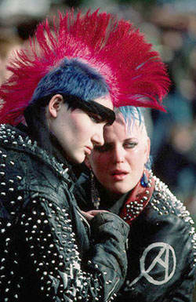
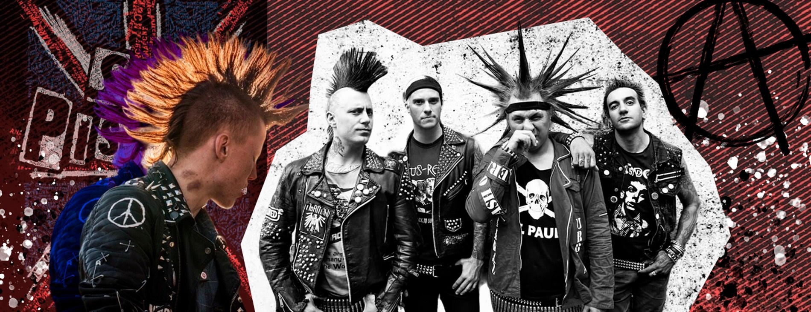

Какие ассоциации возникают у вас при слове «панк»? Яркие ирокезы, высокие ботинки, кожаные куртки, шумная, напоминающая грохот, музыка и неприемлемое поведение в обществе? В какой-то степени это действительно так, но на самом деле субкультура очень многогранна. В нашей статье мы разберёмся, когда и почему появились панки, какие характерные черты у панк-культуры, и что происходит с ней сейчас.
Движение панков зародилось в конце 1960-70-х годов в Великобритании и Америке. В это же время начал развиваться панк-рок. Он отличался «грязным» и неумелым исполнением, но звучал воинственно, почему и стал главным «оружием» против сложившихся устоев в обществе.
26 ноября 1976 года вышел дебютный сингл «Anarchy in the U.K.» («Анархия в Соединённом Королевстве») группы Sex Pistols, который поднял «панковскую волну» и стал неким гимном культуры. После начали появляться различные группы, играющие такую же дерзкую, шумную и «неправильную» музыку, которая сначала захватила всю Англию, а потом и весь мир. Для панк-рока был характерен быстрый темп, простой аккомпанемент и агрессивная манера исполнения. Главным стал текст, где делался упор на социальные проблемы.
Слово «панк» в переводе с английского означает «отброс», «дрянь», «гниль», и связано это с тем, что панками становились представители низших слоёв общества, которым было нечего терять. Этим людям настолько приелся общепринятый уклад жизни, что они решили ярко самовыражаться. Также причиной послужили тревога и разочарование молодого поколения в современном им обществе (проблемы со старшими, экономическое неравенство, лицемерие и пренебрежение со стороны властей).
его снобизм и консерватизм раздражали панков, поэтому всем своим внешним видом они пытались показать непохожесть на остальных. Руководствуясь принципом DIY («делай сам»), панки создавали образы из подручных материалов и вытворяли всё, что хотели.
Важную роль в культуре панка играл протест. Он мог быть культурным (пренебрегающим правилами морали и эстетики), социальным (борющимся за права людей) и анархистским (противодействующим государственному строю и общественным институтам).
Основная ценность панков – свобода. И свобода должна быть везде – никакого навязывания
В момент зарождения движения панки носили растрёпанные волосы, а не ирокезы. Моду на них ввела британская группа The Exploited в начале 1980-х годов. Мода на кеды появилась благодаря группе Ramones, кожаная куртка – из-за Sex Pistols. Панк также популяризировала Вивьен Вествуд – основательница одноимённого стиля в haute couture.